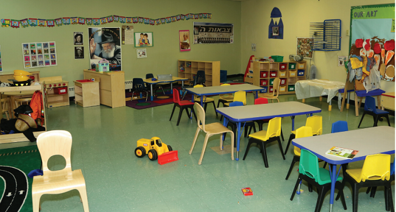

“Is It So Hard to Work with Thirty Children?”

Mrs. Rochel Zamir is known not only by many Lubavitchers, who know her as someone who was privileged to have a special relationship with the Rebbe, but also by thousands of children originally from Holon. Mrs. Zamir worked in chinuch for decades. Most of the children she taught were from irreligious homes and she, with her love and devotion, sacrifice and stubborn struggle, gave them a sweet taste of Torah.
She started her teaching career in a non-Chabad school. The situation changed when, one day in 5719, she was called to a meeting with the gaon and Chassid, Rabbi Dovid Chanzin, who directed Reshet Oholei Yosef Yitzchok.
“We would like to open a school in Holon,” he began, “but we first need to open a preschool, and only after that can we open an elementary school. I would like you to take on this project and be the ganenet.”
That year, 5719, the Rebbe called for anyone who felt he or she was capable of teaching, to teach. Mrs. Zamir said yes, and she began running the Chabad preschool in Holon the very next school year.
For fourteen years, she was the ganenet of the Chabad preschool, but she was actually more than that. She was a loving mother who looked out for her children.
“It was enormous work,” she later said nostalgically. “It was a time of kibbutz galuyos. In my preschool there were children from Yemen, Syria, Tripoli, refugees from Eastern Europe and many others who lived in the transit camps for new immigrants. The myriad mentalities gathered within one preschool class posed a problem.”
Working as a ganenet in the Holon preschool wasn’t easy. Chabad chinuch’s good reputation drew many parents who wanted to send their children to a Chabad preschool. But the municipality was not happy about this. They did not like religious education, and with Chabad gaining ground they decided to make it hard for the parents. The education department withheld appropriate equipment for the school.
The law back then stated that you could not have more than 38 children in one preschool class, but Mrs. Zamir, who saw not only the children, but pure souls, did not obey the law. She accepted 48 children, while the preschool had supplies for only 18. “The physical conditions were abysmal and all pleading to the people in charge at the municipality did not help.”
As time went on, she grew more furious. She saw that next to her preschool class was an empty, abandoned classroom that could easily be turned into another preschool class. But the government people in charge stubbornly refused, despite, or because, of the growing demand. There were parents who came from afar in order to have their child in Ganenet Rochel’s school.
PART II
For Rosh Hashana 5724, Mrs. Zamir went with her husband to the Rebbe for the first time. She had yechidus on the eve of 7 Tishrei. When they entered the Rebbe’s office, they handed in their note with requests for brachos and advice, most of them having to do with the topic of chinuch, so close to her heart. She asked for a bracha that the people in charge at the municipality and the education department approve the opening of another class.
The Rebbe read the letter, looked up, and asked in amazement, “Is it so hard to work with 30 children?” Mrs. Zamir was taken aback by this question and maybe a little offended. She had written explicitly that she worked with 48 children instead of the right number, 18, but she kept quiet, of course.
However, the bitterness in her heart was so great that she could not refrain from asking for permission to leave the preschool, because she couldn’t stand seeing the injustice perpetrated by the municipality.
The Rebbe listened patiently and responded with empathy and encouragingly, “After you invested so much energy, it is not worth leaving what you built up. If you leave, will there no longer be injustice there? The situation must be corrected; it is not enough to just avoid seeing it.”
The Rebbe went on to say, “I think that the mayor of Holon is on good terms with Chabad and even offered to found a Chabad neighborhood. When Rabbi Gorodetzky visits Eretz Yisroel, I don’t know whether in the winter or the summer, he will speak with the mayor and try to open another preschool.”
Before the couple returned to Eretz Yisroel at the end of Tishrei, they had yechidus again on the eve of 3 Cheshvan 5724. The Rebbe mentioned the preschool in Holon again, “I hope that it will be all right. Tell Mr. V to write to me about why they are not opening another preschool, and if he cannot write to me, say that you will write it in his name. It depends on him; he is the boss there.
“Take the mashke from the Shabbos B’Reishis farbrengen, buy cookies and bring it to the Holon municipality and offer some to Mr. Z, director of the education department, and Mr. V, in charge of the supplies department, and all those who can help, and give them regards from me.”
Mrs. Zamir and her husband were astonished by the Rebbe’s familiarity with the names of the employees of the Holon education department and their job titles, as though that city department was his only concern in the world.
When they returned home, they bought baked goods and went to the municipality. They went to the various offices in the education department and distributed food and drink to the employees, as the Rebbe said to do.
Mrs. Zamir went back to work with her usual devotion to the children. If she had hoped the situation would change for the better, thanks to the Rebbe’s advice and blessings, the days passed and nothing happened. 48 children continued attending her class while she looked with yearning at the empty classroom nearby.
PART III
One fine day, as the children played on the playground equipment outside, under her loving supervision, she saw Rabbi Itzke Gansbourg. He was the principal of the Chabad elementary school in Holon.
“I just came from the municipality where I had a meeting with the director of the education department. As we were talking, a ganenet from a public school burst in. In an act of protest, she threw the keys to her preschool on the desk and screamed, ‘I closed the preschool. Here are the keys. As long as you don’t remove the extra child, I will not open the preschool.’ She was so upset that she said accusingly to the director of the department, ‘You know that legally there cannot be more than 38 children and you put in 39.’
“The director tried to calm her down and said, ‘You are right, we will remove the extra child.’ Only after he made an explicit promise did she calm down and take the keys back and leave the room. The director took a deep breath and continued talking to Rabbi Gansbourg and said in a surprised tone, ‘Your ganenet is an angel. Every year she works with 48 children and we don’t hear her complain.’”
After Rabbi Gansbourg finished reporting to Mrs. Zamir he wisely advised her, “Go now and do exactly what that ganenet did. Put down the keys and say you cannot continue working under these conditions.”
Mrs. Zamir realized that she had a golden opportunity. She left the children with her assistants, took the keys and went to the city offices. Without knocking, she entered the director’s office and said she had closed the preschool under duress because of the difficult conditions and the large number of children. She added angrily that this was a shocking injustice when there was an empty classroom nearby.
The director replied briefly, “You are right.” Then and there, he wrote a note and instructed her to go to the director of the supplies department and give it to him.
The director of the supplies department looked at the note and within a short time the order was given to remove 18 children from Mrs. Zamir’s preschool, those who had registered most recently, and to open another Chabad preschool in the room nearby. Then he went with Mrs. Zamir to the warehouse so she could choose furnishings and equipment for the new class.
A few days later, the second class opened and that year, Mrs. Zamir worked with 30 children. When she reviewed the list of names in her class, the prophetic words of the Rebbe in yechidus rang in her ears, “Is it so hard to work with 30 children?”
“It was an open miracle,” Mrs. Zamir concludes.
Not long afterward, the second class was full of children who came from nearby neighborhoods – 35 more children, pure souls, came to absorb the teachings of Chabad and love for Judaism. And every year, children from the preschool moved up to the elementary school, about 70 children.
During that era, the Chabad school in Holon was the most sought-after school in Holon. There were times when over 600 students learned there.
Menachem Ziegelboim. "“Is It So Hard to Work with Thirty Children?”." Beis Moshiach, no. 1111 (March 20, 2018).